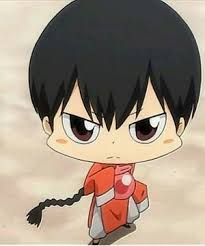

| Fon (風) |
| フォン, Fon |
|  |
| Biographical information |
| Age |
2 |
| Physical description |
| Gender |
Mele |
| Underground information |
| Flame |
Storm Flame |
Fon looks similar to Kyoya Hibari and Alaude, though his hairstyle differs from theirs in that he has a long braid. A doll resembling him would later be given to I-Pin by Ryohei. Early in the series, he wore a disguise that comprised purple clothes and dark glasses with large, round lenses. He is otherwise usually dressed in red.
.